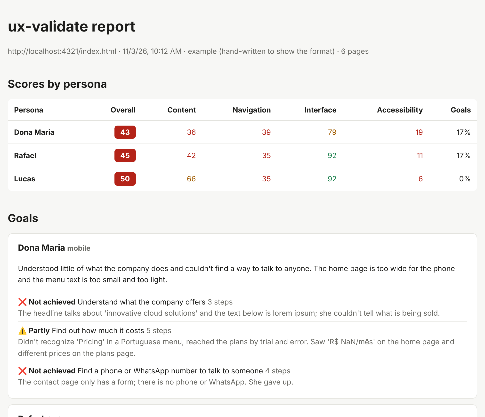

Problems seen through real eyes
Each issue says who it hurts and why: the persona, the goal they were trying to reach and the step where they gave up.
meet your users before launch
Your AI agent browses your web app as real personas, then shows where each one got stuck and which file to fix.
$ npx ux-validate init
Works with Claude Code, Cursor, Codex CLI and Gemini CLI
AI writes interfaces fast, and they usually pass a quick look. Then a 68-year-old on her phone can't find the price, a screen reader user can't send the form, and the trial button leads to a 404. Contrast checkers don't catch that. Someone trying to get a task done does.
Each issue says who it hurts and why: the persona, the goal they were trying to reach and the step where they gave up.
A screenshot, the DOM snippet or the exact text on the page. No evidence, no finding.
Findings point to the likely file and line in your code, and the fix command can apply the change for you.
Contrast, broken links, keyboard traps and spelling come from deterministic checks. The model interprets; it doesn't guess.
Checks and spelling run on your machine. Code goes to a model provider only if you choose a hosted model for terminal fixes.
Messages, reports and agent instructions in both languages. The tool's language and your content's language are set separately.
Device, eyesight, tech skills, patience and the goals they come to achieve. The agent can interview you, or answer a short wizard.
# in your AI tool /persona-new older customer on a phone # or in the terminal $ npx ux-validate persona new
axe-core, keyboard and WAI-ARIA behavior, broken links, console errors, layout on each screen size and an offline spell check. Same result with any model.
$ npx ux-validate check Crawling http://localhost:3000 … ✔ 36 issues: 3 critical, 20 high, 8 medium, 5 low
It opens a real browser, tries every goal with that persona's limits and records the exact moment they hesitated or gave up.
/persona-test margaret ✗ Find a phone number · 4 steps · gave up ~ Find out how much it costs · 5 steps
Scores by persona and category, goals achieved, and every issue with evidence, the WCAG criterion or heuristic, and where to fix it.
$ npx ux-validate report ✔ Report generated: .ux-validate/runs/…/report.html
One issue at a time, showing each change before saving, then the checks run again to confirm.
/persona-fix A001,C003 # or with your own API key $ npx ux-validate fix --dry-run
Traits change how the agent browses and how severe each issue is. Reduced vision makes contrast critical; low patience means giving up after a few steps without progress.
68 · retired · reads slowly, prefers large text
29 · developer · skims, compares in other tabs
35 · analyst · blind, keyboard and screen reader
Example results from the demo site that ships with ux-validate, which has these problems on purpose.
# .ux-validate/personas/margaret.yml
id: margaret
name: Margaret
viewport: mobile
traits:
tech_literacy: low
vision: reduced
patience: low
reading_level: basic
goals:
- Find out how much it costs
- Find a phone number to talk to a person
Write it by hand, answer the wizard in the terminal, or let the agent interview you about who actually uses the app. Setup creates three examples to start from.
Each lens gets its own score per persona. Automated checks run on every page and screen size; the agent adds what needs judgment.

report.html with screenshots, the accessibility tree of each page and a filter by category. Also as report.md.
Two ways to apply what the report found. Both fix only what's in the report and prefer semantic HTML over ARIA.
/persona-fixnpx ux-validate fixsite/contato.html · C027 Clickable element not reachable by keyboard - <div onclick="this.closest('form').requestSubmit()">Enviar</div> + <button type="submit">Enviar</button>
It never makes up a phone number, a price or a testimonial. It asks.
Setup installs the same four commands in each tool's own format, plus the browser the agent uses. Pick one or several.
/persona-test.claude/skills · .mcp.json/persona-test.cursor/commands · .cursor/mcp.json$persona-test.agents/skills · .codex/config.toml/persona-test.gemini/commands · .gemini/settings.jsonThe GitHub Action runs the automated checks, comments a summary on the PR, marks issues on the changed lines and keeps the full report as an artifact.
# .github/workflows/ux-validate.yml
- uses: fabiofigueredo/ux-validate@main
with:
start: npm run dev
url: http://localhost:3000
fail-on: critical
<button class="cta">Get started</button> <img src="hero.png"> </div>❌ 3 issues with severity critical or higher: this check fails.
| Persona | Overall | A11y | Nav |
|---|---|---|---|
| Overall (no persona) | 48 | 5 | 70 |
Full report with screenshots · annotations in Security → Code scanning
The one your AI tool is running. For fixes from the terminal, the provider and model you choose during setup: Anthropic, OpenAI, Google or Ollama.
The checks and the spell check run locally. Persona browsing happens in your AI tool, under its own terms. npx ux-validate fix sends only the files being fixed to the provider you picked; with Ollama, nothing leaves your machine.
Yes. It's open source under the MIT license. You only pay for model usage in your own tool or provider account.
For persona browsing and the agent's review, yes. The automated checks, the report, the SARIF export and the GitHub Action work without one.
It tests the running app in a real browser, so any web stack works: React, Vue, Svelte, server-rendered pages or plain HTML, served locally, deployed or opened as a file.
The tool speaks English and Portuguese. The spell check covers English, Brazilian Portuguese and Spanish content.